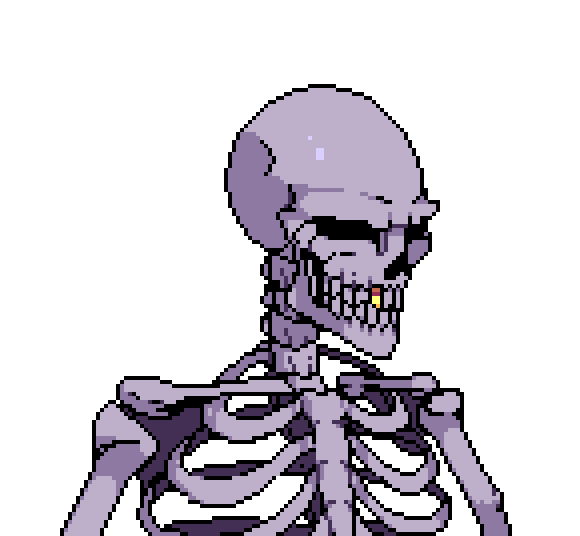

The light flickers. Welcome, visitor.
Hi, I'm Gabriele Novello, a tall person currently based in Turin, Italy.
I've just obtained my M.Sc. from the University of Turin and I am currently in search for job opportunities. My studies were mostly focused on computer graphics and computer vision, but also included broader CS topics I am interested in, such as computer architectures, machine learning, quantum computing and so on.
I consider myself a graphics programmer. I became interested in computer graphics at the beginning of 2023. It was then that I immediately bought myself a copy of the
Real-Time Rendering tome and started learning OpenGL to write a small 3D engine from scratch.
Later, through university courses such as Computer Graphics and Virtual Reality Systems, I deepened my understanding, though I remain mostly self-taught through small personal projects
about topics that occasionally pique my interest.
Right now, my most recent projects are two: Felina and the parallelization of a Lattice-Boltzmann solver.
Felina is a C++ renderer built with modern Vulkan (1.3+). It served as a framework for my master thesis on probe-based real-time dynamic global illumination.
As for the second, a Lattice-Boltzmann solver is a popular method to simulate the behaviour of fluids on a digital computer.
My project consisted in analyzing the performance and scalability of a C implementation, parallelized with OpenMP and OpenMPI and executed on one of the university's clusters through the usage of workload managers such as Slurm.
Outside my education, I enjoy learning and art. In fact, I consider computer graphics to be a perfect combination of these sides. I love filmmaking and studying cinema, film photography, playing guitar, game development and — maybe this is a niche one — learning languages. I am fascinated by Norwegian nowadays, even though I spent about three years learning Japanese on and off.
M.Sc. in Computer Science, 2024 - 2026
Traslated the Computer Graphics course slides from Italian to English as part of a part-time academic position.
B.Sc. in Computer Science, 2021 - 2024